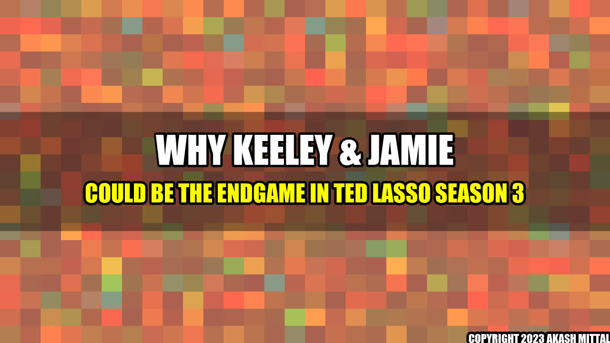

Why Keeley & Jamie Could be the Endgame in Ted Lasso Season 3
When Ted Lasso first aired on Apple TV+ in August 2020, no one could have predicted the overwhelming success it would achieve. The show's heartwarming storyline, relatable characters, and clever humor make it a fan favorite. One of the most interesting relationships that has developed throughout the series is between Keeley and Jamie. Initially, it seemed like an unlikely pairing, but as the show progresses, there are clear signs that they could end up together. Here's why:
Story
When Keeley first joined the team as Roy's girlfriend, it seemed like she was just there to provide some romantic tension. However, as the show has progressed, Keeley has become a beloved character in her own right. She's smart, funny, and fiercely independent. When Jamie is injured and has to take a step back from the team, Keeley is there to help him through it. Throughout Season 2, we see their relationship develop. They start out as friends, but as they spend more time together, it becomes clear that there's something more there.
Some fans are skeptical of this pairing, pointing out that Jamie has been a bit of a jerk in the past. But it's important to remember that characters can grow and change. Jamie has gone through a lot of personal growth over the course of the show, and it's possible that Keeley has had a positive influence on him.
Examples
Chemistry
One of the biggest indicators that Keeley and Jamie could end up together is the chemistry between the actors. Juno Temple and Phil Dunster have incredible chemistry onscreen, and their scenes together are some of the most memorable of the entire series. You can't fake that kind of connection, and it's clear that the two actors have a great rapport.
Shared Interests
Keeley and Jamie also have a lot in common. They're both passionate about soccer, and they both have a strong sense of loyalty to their friends and loved ones. They also have a great sense of humor and can make each other laugh. These shared interests and values are the foundation of any successful relationship.
Growth
Finally, as mentioned earlier, it's important to remember that characters can grow and change over time. Jamie has gone through a lot of personal growth over the course of the show, and Keeley has been a positive influence on him. He's become more self-aware and empathetic, and he's learned to be more vulnerable. These are all important qualities in a partner, and they suggest that Jamie could be ready for a real relationship.
Conclusion
In conclusion, while it's impossible to predict exactly what will happen in Ted Lasso Season 3, there are clear signs that Keeley and Jamie could end up together. Their chemistry, shared interests, and growth throughout the series all suggest that they could be a great match. Of course, anything can happen in the world of television, but fans will definitely be watching this storyline closely.
- Keeley and Jamie have great chemistry onscreen
- They share a lot of interests and values
- Jamie has grown a lot over the course of the show, suggesting that he could be ready for a real relationship
Akash Mittal Tech Article
Share on Twitter Share on LinkedIn